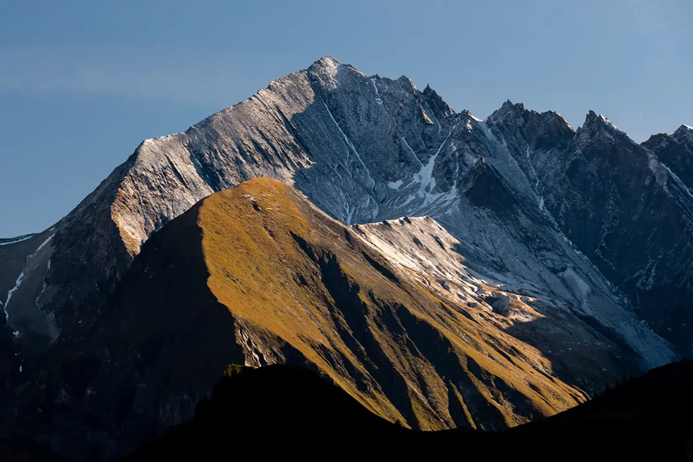
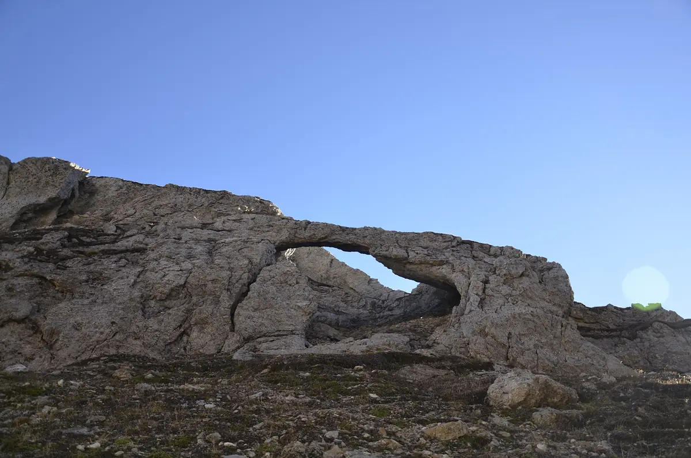
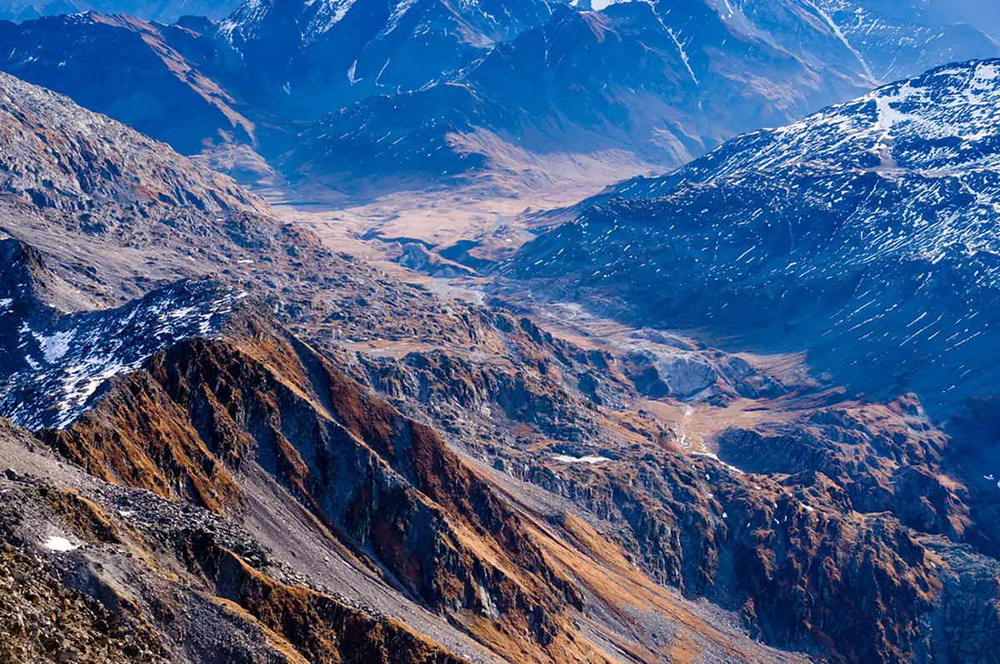
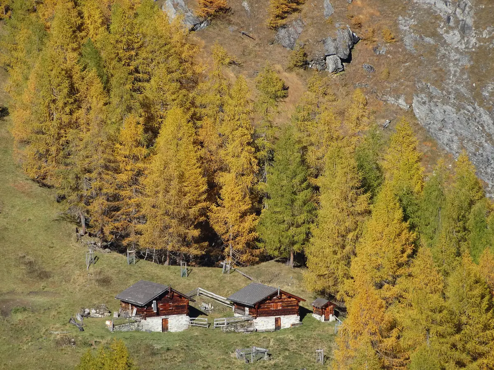
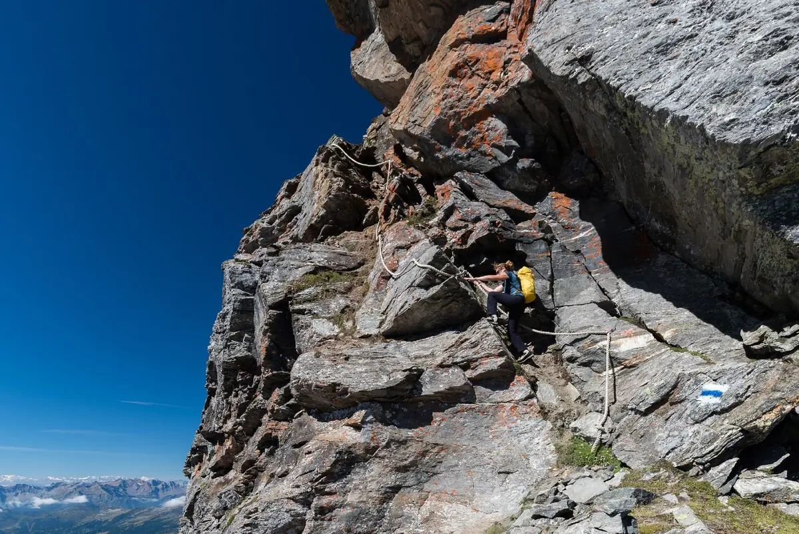

Crap la Crusch
Une promenade facile jusqu’au cœur de la Greina, par l’Alpe Motterascio et le Ri di Motterascio.
- Longueur
- 6 km
- Montée
- +180 m
- Temps
- 2 h
- Difficulté
- T2
Six courses depuis la cabane : Crap la Crusch, Piz Terri, l’arche de la Greina, la Plaun la Greina et la Via Crio.
Si vous avez plusieurs jours, ces itinéraires permettent de vivre pleinement la magie de la Greina. Presque tous partent de la cabane et y reviennent.
Une promenade facile jusqu’au cœur de la Greina, par l’Alpe Motterascio et le Ri di Motterascio.

Le Val Güida, le Piz Terri, le Laghet la Greina, le Val Canal et le Crap la Crusch.

Le Pizzo Coroi, l’arche de la Greina, les méandres, les petites tours rocheuses et les sources du Brenno et du Rhin.

Les sources du Rhin, les méandres, les tourbières, les terrasses parallèles, les buttes herbeuses et le Muot la Greina.

Une variante solitaire et sauvage, hors des sentiers balisés, qui rejoint la cabane par le haut en venant du Luzzone, par l’Alpe Coroi, l’Alpe Larciolo et l’Alpe Garzott.

Deux étapes de la Via Crio passent par la cabane.